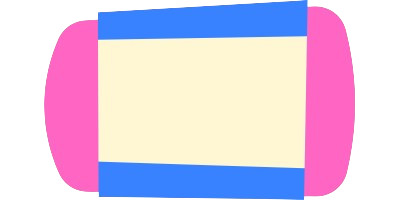

{% extends 'base.html' %}

{% block head %}
<!-- Blok za zaglavlje stranice -->
{% endblock %}

{% block body %}
<!-- Tijelo stranice -->
<body>
    <!-- Slika s naslovnicom -->
    <div>
        

        <!-- Glavni naslov i informacije -->
        <div class="maintitle" style="z-index: 2;" color="black">
            <!-- Naziv pojma -->
            <div style="margin-left: 28.646vw; width: 30.469vw; font-size: 1.563vw; margin-top: 2.083vw; position: absolute; font-weight: bolder; overflow-wrap: break-word;  line-height: 1.51vw;">
                <font>{{ definition.name }}</font>
            </div>

            <!-- Datum kreiranja funkcije -->
            <div style="margin-left: 28.646vw; width: 52.083vw; font-size: 0.938vw; margin-top: 1.042vw; position: absolute; font-weight: lighter;">
                <font>{{ definition.date_created.date() }}</font>
            </div>

            <!-- Predmet pojma -->
            <div style="margin-left: 37.76vw; width: 26.042vw; font-size: 1.563vw; margin-top: 5.781vw; position: absolute; font-style: italic; font-weight: 550; text-align: right;">
                <font>{{ definition.subject.upper() }}</font>
            </div>

            <!-- Opis pojma -->
            <div style="z-index: 2;">
                <h2 style="margin-left: 28.125vw; color: rgb(0, 0, 0); margin-top: 8.333vw; position: absolute; width: 36.458vw; overflow-wrap: break-word; line-height: 1.406vw; font-weight: 500; font-size: 1.198vw;">{{ definition.description }}</h2>

                <!-- Gumbeva za brisanje, uređivanje i označavanje -->
                <div class="create" style="margin-left: 44.271vw; margin-top: 39.063vw; position: absolute;">
                    <a href="/brisanje/{{definition.id}}">
                        
                        <span class="createtext" style="font-size: 0.9vw; top: 40%; left: 50%; transform: translate(-50%, -50%);">Obriši</span>
                    </a>
                </div>
                <div class="create" style="margin-left: 49.479vw; margin-top: 39.063vw; position: absolute;">
                    <a href="/uređivanje/{{definition.id}}">
                        
                        <span class="createtext" style="font-size: 0.9vw;  top: 40%; left: 50%; transform: translate(-50%, -50%);">Uredi</span>
                    </a>
                </div>
                <!-- Provjera označavanja pojma -->
                {% if definition.bookmark %}
                    <div class="create" style="margin-left: 59.896vw; margin-top: 1.042vw; position: absolute;">
                        <a href="/označivanje/{{definition.id}}" title="Poništi označeni pojam!">
                            
                        </a>
                    </div>
                {% else %}
                    <div class="create" style="margin-left: 59.896vw; margin-top: 1.042vw; position: absolute;">
                        <a href="/označivanje/{{definition.id}}" title="Označi pojam!">
                            
                        </a>
                    </div>
                {% endif %}
            </div>
        </div>
    </div>
</body>
{% endblock %}
